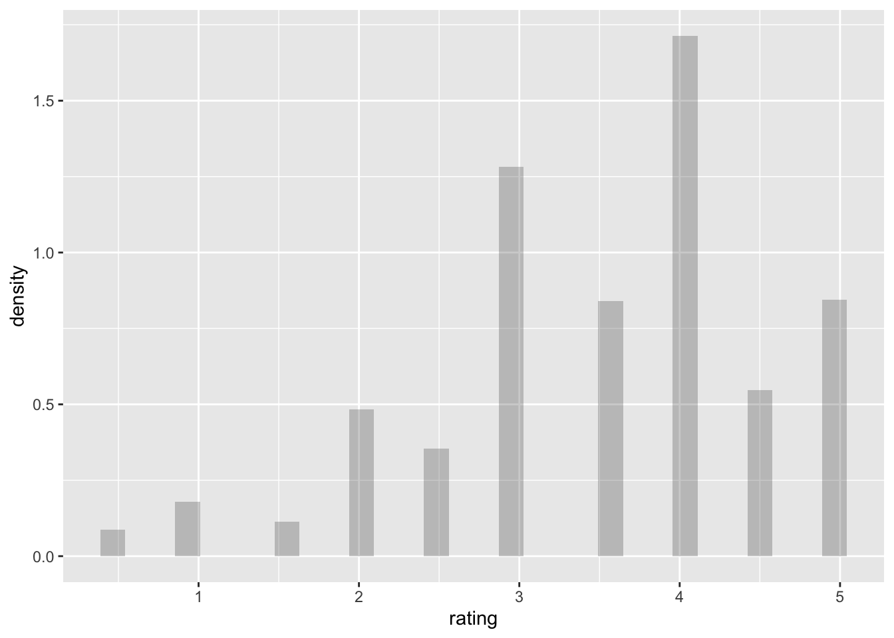
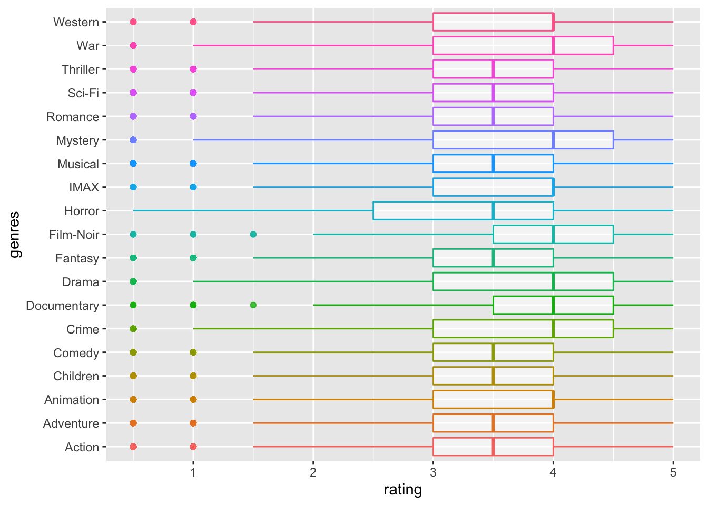

Final Report
Haolin Zhong, Shaocong Zhang, Yuxuan Wang, Boqian Li
12/7/2021
Motivation
The prosperity of Internet industry enabled massive knowledge and entertainments to be accessible at one’s fingertips, making people no longer in thirst for feeds. However, massive information also trapped people into another dilemma: we got numerous choices for our limited attentions. Therefore, many Internet companies, such as Youtube, Tiktok and Bilibili, has equipped their website with personalized recommendation service in their backend to attract users’ attentions as much as possible. Curious about what’s behind the curtain, we decide to learn and implement recommendation algorithms to build our own recommendation system.
Initial questions
- Which movies have the highest ratings?
- Are there any significant differences in ratings of movies in different categories? (Which types of movies do people like)
- Is there any relationship between movie ratings and movie release year? (Have movie ratings worsened in recent years?)
- Is there any relationship between movie ratings and review time? (Is it harder and harder to cater to the tastes of the audience?)
- For new users entering into the recommendation system, how to gain the first batch of rating information?
- For existing users in the system, how to recommend movies to them according to ratings they given?
Data
Source
Dataset source used for EDA analysis:MoiveLensdataset - MovieLens, a movie recommendation service, provided this dataset (ml-latest-small), which describes 5-star rating and free-text tagging activities. Over 9742 movies, it has 100836 ratings and 3683 tag applications. Between March 29, 1996, and September 24, 2018, 610 people produced this data. On September 26, 2018, this dataset was created. - The participants were chosen at random. All of the individuals that were chosen had rated at least 20 films. There is no demographic information provided. An id is assigned to each user, and no additional information is supplied. - The files links.csv, movies.csv, ratings.csv, and tags.csv contain the data.
Data cleaning for EDA
As for further analysis, we choose to clean some of our datasets. For dataset “rating.csv”, we apply the janitor::clean_names() function to make sure that everything is in lower case, and we also exclude the “timestamp” variable that does not related to our analysis assumption. After this step, we set up a new data frame called “rating_tidy”. Next up, we also create a new dataframe called “high_rating”, which only contains the highest rating score “5” of the “rating_tidy” dataframe. Last but not the least, we rename the variable “movieId” to movie_id for the “movie.csv” dataset and transfer it to a new data frame called “movie_names”.
library(tidyverse)
data_path = "./data/small/ratings.csv"
rating_tidy =
read_csv(data_path, col_types = "ccnc") %>%
janitor::clean_names() %>%
select(-timestamp) %>%
mutate(rating = as.double(rating))
high_rating =
rating_tidy %>%
filter(rating == 5.0)
movie_names =
read_csv("./data/small/movies.csv") %>%
rename(movie_id = movieId)
Data cleaning for tag-based recommendation
For tag-based recommendation, we use the “tag.csv” dataset. After using janitor::clean_names() to clean the variable names, we use the strsplit to split the tag into single words. In this way, punctuation marks (like comma, parenthesis) and “less important” words (like “a”, “too”) become the main barriers to the data cleaning process.
In order to removing the punctuation marks in the dataset, we apply removePunctuation() to the dataset and successfully remove all the punctutation.
The “less important” words are more complicated. Fortunately, a stop list helps us a lot, which contains the stop words that are frequently used in different languages (we only consider English in this project). Then, we remove the tags that are contained in the stop list and get the dataset for this part.
Exploratory analysis
Summaries
Overview of dataset “ratings.csv”
We applied the “summarise()” function to briefly describe the variable “rating”. According to the result, variable rating show that the minimum is 0.5, the first quantile is 3, median is 3.5, mean is 3.502, third quantile is 4 and the maximum is 5.Since userid, movieid, timestamp only represent the ID of users, id of movies respectively, and digital record of the time of occurrence of a particular movie, we choose not to analyze those three variables.
knitr::opts_chunk$set(echo = TRUE)
library(tidyverse)
library(readr)
library(ggplot2)
library(kableExtra)
library(pastecs)
library(ggpubr)
library(tm)
data_path = "./data/small/ratings.csv"
summary_df =
read_csv(data_path, col_types = "ccnc") %>%
janitor::clean_names() %>%
summary(summary_df$rating) %>%
knitr::kable() %>%
kable_styling(bootstrap_options = c("striped")) %>%
kableExtra::kable_styling(font_size = 12)
summary_df| user_id | movie_id | rating | timestamp | |
|---|---|---|---|---|
| Length:100836 | Length:100836 | Min. :0.500 | Length:100836 | |
| Class :character | Class :character | 1st Qu.:3.000 | Class :character | |
| Mode :character | Mode :character | Median :3.500 | Mode :character | |
| NA | NA | Mean :3.502 | NA | |
| NA | NA | 3rd Qu.:4.000 | NA | |
| NA | NA | Max. :5.000 | NA |
Overview of dataset “movies.csv”
We count the 5 most appeared genres and made a table. The result are as following. Drama appeared 4361 times,1st place. Comedy appeared 3756 times, 2nd place. Thriller appeared 1894 times, 3rd place. Action appeared 1828 times, 4th place.Romance appeared 1596 time, 5 th place. Next, we also count the 5 most appeared year of the movie released, and made a table which shoes the result. 2006 appeared 733 times,1st place. 2009 appeared 719 times, 2nd place. 2005 appeared 709 times, 3rd place. 2002 appeared 705 times, 4th place. 2008 appeared 691 time, 5 th place.
data_path = "./data/small/movies.csv"
movie_descriptive =
read_csv("./data/small/movies.csv") %>%
janitor::clean_names() %>%
separate(
title, c("name", "year"), sep="\\s+(?=\\S*$)") %>%
separate_rows(genres, sep = "[|]")
genres_count =
movie_descriptive %>%
group_by(genres) %>%
count(genres) %>%
filter(n >= 1500) %>%
arrange(desc(n)) %>%
knitr::kable() %>%
kable_styling(bootstrap_options = c("striped")) %>%
kableExtra::kable_styling(font_size = 12)
genres_count| genres | n |
|---|---|
| Drama | 4361 |
| Comedy | 3756 |
| Thriller | 1894 |
| Action | 1828 |
| Romance | 1596 |
year_count =
movie_descriptive %>%
group_by(year) %>%
count(year) %>%
filter(n >= 690) %>%
arrange(desc(n)) %>%
knitr::kable() %>%
kable_styling(bootstrap_options = c("striped")) %>%
kableExtra::kable_styling(font_size = 12)
year_count| year | n |
|---|---|
|
|
733 |
|
|
719 |
|
|
709 |
|
|
705 |
|
|
691 |
Exploratory Statistical Analyses
Find popular movies and high-rating movies
In order to find the top 5 popular movies with highest rating, we filtered movies with rating less than 5, and count the 5 most rated movies. The Shawshank Redemption (1994) is the most popular movie, which has 153 times user rating. No.2 Pulp Fiction (1994), has 123 times user rating. 116 times user rating, Forrest Gump (1994) wins the 3rd popular place. The Matrix (1999) has 109 times user rating,and is the fourth place among the top 5 popular movies. No. 5 is Star Wars: Episode IV - A New Hope (1977), and it has 104 times user rating. We also find out that among those 5 most rated movies and highest rating movies, genres with tag drama appears the most(3 times, appear in Forrest Gump (1994), Pulp Fiction (1994),The Shawshank Redemption (1994)). We also find out one interesting fact is that among the 5 most popular movies and 5 highest rating movies, 3 movies are released in 1994; 4 movies are released in the 90s.
data_path = "./data/small/ratings.csv"
rating_tidy =
read_csv(data_path, col_types = "ccnc") %>%
janitor::clean_names() %>%
select(-timestamp) %>%
mutate(rating = as.double(rating))
high_rating =
rating_tidy %>%
filter(rating == 5.0)
movie_names =
read_csv("./data/small/movies.csv") %>%
rename(movie_id = movieId)
high_rating_movienames =
merge(high_rating, movie_names) %>%
group_by(title, genres,rating) %>%
count(movie_id) %>%
filter(n >= 100) %>%
select(n,title,genres,rating) %>%
ungroup(title, genres,rating) %>%
arrange(desc(n)) %>%
separate(
title, c("name", "year"), sep="\\s+(?=\\S*$)") %>%
knitr::kable() %>%
kable_styling(bootstrap_options = c("striped")) %>%
kableExtra::kable_styling(font_size = 12)
high_rating_movienames | n | name | year | genres | rating |
|---|---|---|---|---|
| 153 | Shawshank Redemption, The |
|
Crime|Drama | 5 |
| 123 | Pulp Fiction |
|
Comedy|Crime|Drama|Thriller | 5 |
| 116 | Forrest Gump |
|
Comedy|Drama|Romance|War | 5 |
| 109 | Matrix, The |
|
Action|Sci-Fi|Thriller | 5 |
| 104 | Star Wars: Episode IV - A New Hope |
|
Action|Adventure|Sci-Fi | 5 |
Find the average rating of each genres in different year
As to find out the average rating of each genres in different year, we first seperrate the combined genre and find out the average rating in different by using groupby and summarize functions. The table clearly shows that in 1902, the average ratings for genres Action, Adventure, Fantasy, Sci-Fi are all 3.5. In 1903, the average ratings for genres Crime and Western are both 2.5. The averages for genres Animation, Comedy, Sci-Fi in 1908 are all 4.0. The genre Drama’s average ratings in 1915 is 2.0.
movie_names_ave =
read_csv("./data/small/movies.csv") %>%
rename(movie_id = movieId) %>%
separate(
title, c("name", "year"), sep="\\s+(?=\\S*$)") %>%
separate_rows(genres, sep = "[|]") %>%
filter(!genres %in% "(no genres listed)")
filter_ratingscore =
rating_tidy
ave_rating =
merge(filter_ratingscore, movie_names_ave) %>%
group_by(year,genres) %>%
summarize(mu_rating = mean(rating)) %>%
head(10) %>%
knitr::kable() %>%
kable_styling(bootstrap_options = c("striped")) %>%
kableExtra::kable_styling(font_size = 12)
ave_rating| year | genres | mu_rating |
|---|---|---|
|
|
Action | 3.5 |
|
|
Adventure | 3.5 |
|
|
Fantasy | 3.5 |
|
|
Sci-Fi | 3.5 |
|
|
Crime | 2.5 |
|
|
Western | 2.5 |
|
|
Animation | 4.0 |
|
|
Comedy | 4.0 |
|
|
Sci-Fi | 4.0 |
|
|
Drama | 2.0 |
Kruskal-Wallis Test regarding user ID and rating
We first wanted to do a test to determine whether there are any statistically significant differences between the mean ratings of the user from the 600 users are different by using ANOVA.In order to use ANOVA, we checked whether the rating is normally distributed. However, because the plot showed that the rating is not normally distributed, we need to use non parametric test.Thus, we used the Kruskal-Wallis Test regarding user ID and rating. The Kruskal-Wallis H test (also known as the “one-way ANOVA on ranks”) is a rank-based nonparametric test that may be used to see if two or more groups of an independent variable on a continuous or ordinal dependent variable have statistically significant differences. It is the nonparametric counterpart of the one-way ANOVA (Kruskal-Wallis H Test in SPSS Statistics | Procedure, output and interpretation of the output using a relevant example., 2021). Our assumption for KW test are: \(H_0:\mu_{0}=\mu_1=\mu_2=\mu_3=...=\mu _x\),\(H_1: \text{At least two of the mean ratings of the users are different}\). The result shows that the p value is less than 0.05.We can thus conclude that at 0.05 significance level, we reject the null hypothesis and conclude that at least two of the mean ratings of the user from the 600 users are different.
ggplot(filter_ratingscore, aes(x = rating, y = ..density..)) +
geom_histogram(alpha = 0.3, bins = 30) 
kruskal.test(rating ~ user_id, data = filter_ratingscore) %>%
broom::tidy() %>%
kableExtra::kbl() %>%
kable_styling(bootstrap_options = c("striped")) %>%
kableExtra::kable_styling(font_size = 12)| statistic | p.value | parameter | method |
|---|---|---|---|
| 20676.72 | 0 | 609 | Kruskal-Wallis rank sum test |
Visualizations
Rating distribution among different genres
In order to find the rating distribution among different genres, we decided to use boxplot .The boxplot regarding ratings and genres shows that the spread of the ratings of War, Mystery,Horror and Crime are larger comparing to the other ratings of genres. All of ratings have outliers around either 1.0 point or 0.5 point. The ratings of genres Film-Noir and documentary have outliers at 1.5 points.We can also conclude that the mean of the ratings of genres like Thriller,sci-fi, Romance, Musical, Horror, Fantasy, Comedy, Children, Adventure and Action all equal to 3.5. The mean of the ratings of genres include Western, War, Mystery, IMAX, Film-Noir, Drama, Documentary, Crime and Animation all equal to 4.
movie_names =
read_csv("./data/small/movies.csv") %>%
rename(movie_id = movieId) %>%
separate(
title, c("name", "year"), sep="\\s+(?=\\S*$)")
filter_ratingscore =
rating_tidy
boxplot_df =
merge(filter_ratingscore, movie_names) %>%
janitor::clean_names() %>%
separate_rows(genres, sep = "[|]") %>%
filter(!genres %in% "(no genres listed)") %>%
ggplot(aes(x = rating, y = genres)) + geom_boxplot(aes(color = genres, alpha = .5)) +
theme(legend.position="none")
viridis::scale_color_viridis(discrete = TRUE)
boxplot_df 
Rating distribution among different years
Next up, we also decided to use boxplot to show the rating distribution among different years. Since this dataset include too much year, we choose to show only part of the boxplot regarding year and rating.According to the boxplot, we can conclude that the rating of years including 2010, 2009, 2007,2006 and 1998 have the least rating data records. There is no obivous trend shown in the plot.
movie_names =
read_csv("./data/small/movies.csv") %>%
rename(movie_id = movieId) %>%
separate(
title, c("name", "year"), sep="\\s+(?=\\S*$)")
boxplot_df2 =
merge(filter_ratingscore, movie_names) %>%
mutate(
year = removePunctuation(year)
) %>%
head(1000) %>%
ggplot(aes(x = rating, y = year)) + geom_boxplot(aes(color = year))+
theme(legend.position="none")
viridis::scale_fill_viridis(discrete = TRUE)
boxplot_df2 
Additional analysis
Identification of differentiable movies
We implemented adaptive bootstrapping algorithm (Golbandi, N., et al. 2011) to find movies significantly differentiate people of different taste.
According to user’s response to the given movie, the algorithm classifies users into three sub-groups: lovers \(N^{+}\), haters \(N^{-}\), and people unknown of the movie \(\overline{N}\). We choose 3.5 as the cut-off to determine whether users are lovers or haters, as our exploratory analysis found that 3.5 is the median of all ratings.
The algorithm defined a term \(D_{m}\), which is equal to the sum of subgroups’ standard deviation of ratings on other movies (\(\space D(m) = \sigma_{u \in N^{+}(m)} + \sigma_{u \in N^{-}(m)} + \sigma_{u \in \overline{N}(m)} \space\)), to measure movies’ differentiation ability. By the definition, the most differential movie, i.e. the best splitter, should have the lowest \(D_{m}\), because bad splitters will divide people with different taste into the same sub-group, resulting in increased \(D_{m}\).
Once the algorithm found the most differential movie for overall users, it will repeat the above process in the 3 sub-groups, Lovers, haters and people unknown of this movie, separately. This recursive process was thus named bootstrapping. Subsequently, the algorithm will build a structure similar to a decision tree whose nodes are movies. Our implementation constructed such a ternary tree structure with a depth of 3. The result can be interpreted by the figure below:

For new users, let them rate on “The Last Samurai” at first. Users who give ratings above or equal to 3.5 are considered to be lovers, and those who give ratings below 3.5 are considered to be haters. Users can also reply that they haven’t watched this movie. For lovers, we then let them rate on “The Lord of the Rings: The Two Towers”, for haters we let them rate on “Finding Nemo”, and the unknown will be asked to rate on “City of God”. After rating on the second provided movie, users will then be asked to rate on the third movie which is also adaptively provided.
Since these movies significantly differentiate people of different taste, collection of user’s rating on them will allow us to generate more personalized recommendation.
User-similarity-based recommendation
A basic strategy for recommendation is, find users similar to the new user, and recommend the new user with what similar users like. Based on this strategy, a technique, collaborative filtering, was invented to making predictions (filtering) about the interests of a user by collecting preferences or taste information from many similar users (collaborating).
This algorithm predict ratings with the following procedures: - Find X most similar users to the given user (Here we set X to 10) - Find all movies that these similar users have rated and the given user has not watched - Predict the given user’s ratings on these movies based on the similarity measure and ratings of similar users. The formula is:
\[ \hat{r}_{u m}=\bar{r}_{u}+\frac{\sum_{v \in S(u, K) \cap N(m)} w_{u v}\left(r_{v m}-\bar{r}_{v}\right)}{\sum_{v \in S(u, K) \cap N(m)}\left|w_{u v}\right|} \]
In the above process, finding similar users and predicting ratings involve the measurement of similarity, \(w_{uv}\). We considered two measurements, cosine similarity and Pearson correlation, and compared their performance through experimentation.
\[ \begin{align} & \text{Cosine Similarity}: & w_{u v} = \frac{\sum_{m \in M} r_{u m} \cdot r_{v m}}{\sqrt{\sum_{m \in M}r_{u m}^{2} \cdot \sum_{m \in M}r_{v m}^{2}}} \\ \\ & \text{Pearson Correlation}: & w_{u v} =\frac{ \sum_{m \in M}\left(r_{u m}-\bar{r}_{u}\right) \cdot\left(r_{v m}-\bar{r}_{v}\right)}{\sqrt{\sum_{m \in M}\left(r_{u m}-\bar{r}_{u}\right)^{2} \sum_{m \in M}\left(r_{v m}-\bar{r}_{v}\right)^{2}}} \end{align} \]
We performed 30 rounds of experiment. In each round, for each user, we randomly extract 20% records of their ratings as the test dataset, and the remained dataset as train dataset. Then, we use the two similarity measures separately to find similar users and subsequent predicted ratings on corresponding movies in the test dataset. Finally, we compute the RMSE between predicted ratings and actual ratings in the test data set, and get the two RMSE values.
The comparison between RMSE values of predictions based on the two measurement revealed that in this dataset, Pearson correlation is a better measurement which leads to smaller prediction error. Therefore, we implemented the algorithm with Pearson correlation in our shiny app.
Latent-factor-based recommendation
we built a latent factor model based on Funk-SVD to predict ratings for existing users in the dataset.
Funk-SVD was named and authored by Simon Funk. The core idea of this algorithm is that decompose the user-movie sparse matrix \(R\) into two matrix, the user feature matrix \(P\) and the movie feature matrix \(Q\) which satisfies \(R = P \times Q^T\), then predicted rating by calculating \(\displaystyle R_{um} = P_u \cdot Q^T_m\). Features are latent factors that we can’t and don’t have to directly measure or understand.
In human words, the interaction between a user’s latent characteristics and a movie’s latent characteristics decides the user’s rating to the movie. Find values of these latent characteristics by decomposing the rating matrix, then predict ratings based on them.
We implemented this algorithm and predicted ratings on the matrix constructed from the first 20 users and the first 20 movies in the dataset. To find \(P\), \(Q\), we generated two random matrix, and performed gradient descent to minimize the loss to let their product approximate the true rating matrix.
In gradient descent, the loss function was defined as:
\[\displaystyle L(P, Q) = \sum_{(u, m) \in \text{Train}} \left(R_{um} - P_u \cdot Q^T_m \right)^2 + \lambda \sum_u||P_u||^2 + \lambda \sum_m ||Q_m||^2\]
By performing differentiation, we found the partial derivatives of loss to \(P\) and to \(Q\):
\[\frac {\partial}{\partial P_u}L = \sum_{m} 2(P_uQ_m^T - R_{um})Q_m + 2\lambda P_u \\ \frac {\partial}{\partial Q_m}L = \sum_{u} 2(P_uQ_m^T - R_{um})P_u + 2\lambda Q_m\]
Accordingly, we can update the value of \(P\) and \(Q\) in each round of gradient descent:
\[P_u := P_u - \alpha \frac {\partial L}{\partial P_u} \\ Q_m := Q_m - \alpha \frac {\partial L}{\partial Q_m}\]
Our train process on the train data minimized the loss to approximately 0. We further applied this model to predict ratings for NA value in the original rating matrix. With the size of the matrix in the train data enlarges, the time cost for training this model accurately increases. Therefore, we didn’t apply this model in our shiny app or try to optimize this model.
Tag-based recommendation
In this project, we have implemented several algorithms for recommendation systems, such as tree-based bootstraping, user-similarity based recommendation, and tree-based bootstrapping. The next one I want to introduce is the tag-based recommendation system algorithm. Before introducing the new recommendation system, we need a new dataset to carry on the thoughts. The “tag.csv” in the Movielens contains the data we are looking for. The dataset includes user id, movie id, tag and time stamp (it represents seconds since midnight Coordinated Universal Time of January 1, 1970, but we will not use this variable in this part). Based on these information, we can construct a personalized recommendation algorithm by:
Count the most commonly used tags of the user.
For each tag, count the movies that have been labeled the most times.
For a user, first find his commonly used tags, and then find the most popular movies with these tags to recommend to the user.
For the above algorithm, the formula of user u’s interest in movie i is as follows:
\(p(u, i)=\sum_{b} \frac{n_{u, b}}{\log \left(1+n_{b}^{(u)}\right)} \frac{n_{b, i}}{\log \left(1+n_{i}^{(u)}\right)}\)
where \(B(u)\) is the set of tags that user u has labeled, \(B(i)\) is the set of tags that movie i is labeled, \(n_{u, b}\) is the number of times that user u has labeled tag b, \(n_{b, i}\) is the number of times that movie i has been labeled tag b, \(n_b^{(u)}\) records how many different users have used tag b, \(n_i^{(u)}\)records how many different users have tagged the movie i. To get the specific value, we should build our function first.
The difficulty of the function is to find the correct sets of tags or users. To acheive the goal, we use the knowledge we have learned in the class, manipulate the dataset count the corresponding numbers we need during each trail. Sum all of the value we got in each trail and then we can get the interest value of the user on specific movie (or item). The function code can be seen here.
After building the function, we want to select the most popular movies to see how this function works. That is, we want to visualize the interest value. However, the dataset only contains about 3700 tags labeled by the users. The limited dataset will destroy the credibility of the tag-based recommendation system, as the user we want to analyze may have a few tags and there may also a few tags for movies. In order to making sure that the interest values to be nonzero, we will then choose several movies that have labeled most by users and select several active users. In this way, we select the users that have labeled more than 20 movies and select movies that has labeled by more than 4 users. The selected movies for example, Star Wars: Episode IV - A New Hope. The selected movies’ table is here.
To visualize the users’ interest values, we decided to create a heat map. A heat map (or heatmap) is a data visualization technique that shows magnitude of a phenomenon as color in two dimensions. The variation in color may be by hue or intensity, giving obvious visual cues about how the phenomenon is clustered or varies over space. The heat map is shown below. The horizontal coordinate of the heat map is the movie ID and the vertical coordinate is the user ID, each corresponding color represents the level of the user’s interest in the movie. The brighter the color (the greater the interest value), the deeper the interest, and the darker the color (the smaller the interest value), the lighter the interest. The detailed code is here.
Tag based TF-IDF can help us predict the user’s interest on a certain movie (or item). The algorithm’s validity relies on a large dataset. That is, when enlarging the dataset, the system will become more and more accurate. In this way, the system works well for big websites due to their large user groups.
The algorithm above have punishment for popular tags and popular movies, and doesn’t reduce the accuracy of the recommendation results while enhancing the personalization of the recommendation results.
Discussion
EDA
Key finding & insights
We first found out some overview information about the datasets that were mainly used in the EDA. This step helped us to decide which variables are more necessary to be included in the analysis.
In our closer look at the relationship between movies and ratings, we found out a lot of useful information which can answer some of our initial questions. We filtered movies with a rating of less than 5 and counted the top 5 most rated movies to discover the top 5 most popular movies with the highest rating. The Shawshank Redemption (1994) is the most popular film, with a user rating of 153 times. No. 2 Pulp Fiction (1994) has been rated 123 times by users. Forrest Gump (1994) comes in third position with 116 user ratings. The Matrix (1999) is ranked fourth among the top five most popular films, with a user rating of 109 times. Star Wars: Episode IV - A New Hope (1977) is ranked No. 5 with a 104 percent user rating. We also discover that drama is the most prevalent genre among the top 5 most rated and highest rated films (appearing three times in Forrest Gump (1994), Pulp Fiction (1994), and The Shawshank Redemption (1994)). We also discover an intriguing fact: three of the top five most popular and highest-rated films were released in 1994, while four were released in the 1990s.Besides what we found out about the relationship between movies and ratings, we also got information about the average rating of each genres in different year. The average rating for the categories Action, Adventure, Fantasy, and Science Fiction in 1902 is 3.5. The average rating for the genres of crime and western in 1903 is 2.5. In 1908, the averages for the categories Animation, Comedy, and Science Fiction were all 4.0. In 1915, the average rating for the category Drama was 2.0.
In addition to the abstract digital results, we also got a lot of more intuitive visualization results. The boxplot of rating distribution namong different genres shows us the spread of the ratings of different genres of movies. Outliers in all of the ratings are around 1.0 or 0.5 points. Outliers of 1.5 points are seen in the Film-Noir and Documentary category ratings. We may also deduce that the average rating for genres such as Thriller, Science Fiction, Romance, Musical, Horror, Fantasy, Comedy, Children, Adventure, and Action is 3.5. Western, War, Mystery, IMAX, Film-Noir, Drama, Documentary, Crime, and Animation all have a mean of 4 out of 5 stars. The boxplot which explore the rating distribution among different years also provide some stright forward results. We choose to present only a portion of the boxplot related year and rating because this dataset contains too many years. According to the boxplot, the rating data records for the years 2010, 2009, 2007, 2006, and 1998 have the fewest rating records. In the plot, there is no obvious trend.
Except the visualization results, we also did the Kruskal-Wallis Test and thus found out that At 0.05 significance level, we reject the null hypothesis and conclude that at least two of the mean ratings of the user from the 600 users are different.
Suggestions for further research and analysis of EDA
Future analysis could provide more information about what factors cause different rating score and try to provides information of the findings.
Future modifications should aim to provide other types of visualization results. In stead of boxplot, we could try to use density plot, scatter plot, etc.
Future research should focus on how to do more tests or modelings for nonparametric variable.
Additional Analyses
Finding Differentiable Movies
Through adaptive bootstrapping, we found the most “differentiable” movies in the dataset. We noticed that these movies are basically high-rating movies. This may be resulted from the trend that movies received more ratings tends to be high-rating movies. However, for high-rating movies, most people love them and only a small proportion of people dislike them. The unbalanced population sizes of lovers and haters may affect the calculation of variance of ratings, as a larger population generally has lower variance compared to smaller population, which can subsequently affect the power of \(D(m)\) in measuring differentiability. So, such result suggests potential bias caused by our method of filtering popular movies. To avoid such problem, if given a dataset with ample records of ratings, we can further filter popular movies to only include those with balanced population of lovers and haters.
Considering timepoint of rating
In our analysis, we excluded the variable timestamp, which describes the timepoint that the rating was given at. However, integration of timepoint may significantly improve the performance of models, because a user’s taste may change with time and does not always stay the same. To integrate timepoint, ratings can be adjusted by timepoint, making ratings given earlier become smaller to reward recent ratings as they reflect users’ current taste.
Tag-based recommendation
A tag-based recommendation system can calculate a numerical value by algorithmically visualizing a user’s interest in a movie. Based on the user’s tag set and the tag set of a specific movie, the system calculates the interest value of the movie and recommends the movie to the user based on this value. The molecule of the formula, which is \(\sum_{b} n_{u, b} n_{b, i}\), firstly compute the user’s interest in a certain movie by finding the sets. \(B(u)\) is the set of tags that user u has labeled, \(B(i)\) is the set of tags that movie i is labeled, \(n_{u, b}\) is the number of times that the user u has labeled tag b and \(n_{b, i}\) is the number of times that movie i has been labeled tag b
However, this formula tends to give a lot of weight to popular movies corresponding to popular tags, which will lead to recommending popular movies to users, thus reducing the novelty of the recommendation results. To solve these problems, scholars improve this formula by drawing on the idea of TF-IDF and constructing the new formula.
\(p(u, i)=\sum_{b} \frac{n_{u, b}}{\log \left(1+n_{b}^{(u)}\right)} \frac{n_{b, i}}{\log \left(1+n_{i}^{(u)}\right)}\),
where \(n_b^{(u)}\) records how many different users have used tag b, \(n_i^{(u)}\)records how many different users have tagged the movie i. The denominator of the formula is used to appropriately punish popular labels and popular items, but the results will not reduce the offline accuracy of the recommendation results while enhancing the personalization of the recommendation results.
Although we got the interest function of user u on movie i, it was still hard to create the heat map. The main problem was the small dataset. The dataset only contains 58 users and most of them only labeled 1 movie. In this way, if the sample size is not large enough, \(n_{b, i}\), which is the number of times that movie i has been labeled tag b, will always be 0. Then we cannot predict the user’s interest anymore and the heat map then will be bad and doesn’t contain useful information.
Luckily, there are several movies that are popular and some users are active. That is, the movies were labeled by several users and some users labeled numbers of movies. We selected the popular movies and active users and then created a heat map.
It is confirmed that if the sample dataset is large enough, then a person will be able to get the interest of any user for any movie and form a movie recommendation system based on it. For example, the interest value is held, and the movie is recommended to the user if it is larger than a certain standard value; the users with similar movie watching interests can be grouped together, and the movie with the highest interest value in this group of users’ will be recommended. In this project, because of the limited sample dataset, time and experience, we could not go deeper. A further investigation can be done in the future.
Shiny app
We implemented results of adaptive boostrapping and user-similarity based recommendation in our shiny app. Users can rate on adaptively-provided movies found by adaptive boostrapping, or rate on any other movie released after 1990. After rating on at least 3 movies, user can get movies recommended by the user-similarity-based recommendation algorithm. The computation for generating recommendation usually takes 1~3 minutes.